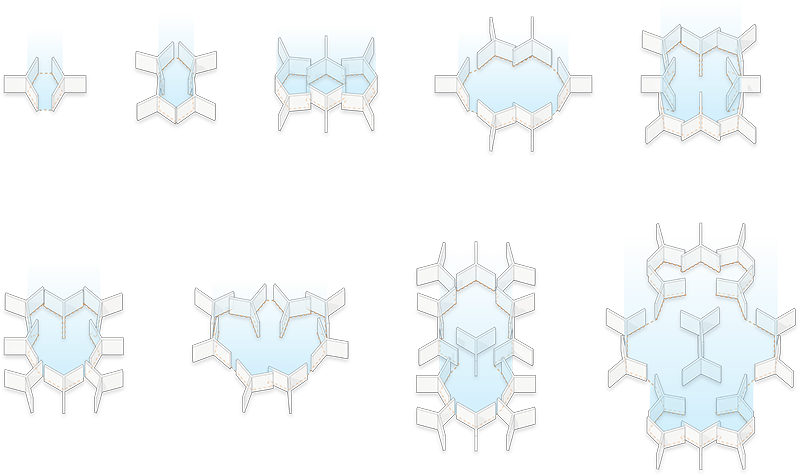
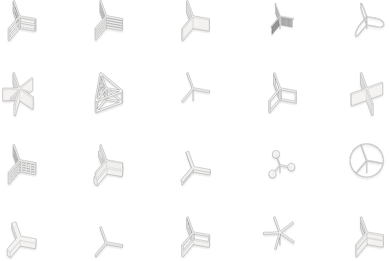

This thesis seeks to rejuvenate the role of the playground within the urban fabric by reflecting on its importance and value in a person’s development. The playground must be upheld as an important architectural design opportunity for creating cases where agency and culture can be expressed.
The American playground originally served as a place not only for creativity and risk-taking, but also for learning about agency and manipulating one’s environment. However, in recent decades, the playground has prioritized commercialization and safety regulations, and the original effect a child could have over their physical environment has been lost.
The designer’s role in rejuvenating the American playground cannot only be to bring back risk and creativity, but to encompass all that one learns in a playground, including cognitive skills and social growth. Play encourages mediation and collaboration when manipulating the physical world and it becomes the designer’s obligation to embed these skills in the playground of a new generation.
A Brief History of The Playground
Play as Growth
The Component
Configuration of Space
Component Form
Component Diversity

Siting
The Model
The Characters
The design of the playground was put through several simulations of what a child would do when transversing the site. The age group that this playground focuses on is from ages four to eight, during their development from play focused on the self to play focused on other people.
A child goes from play focused on motor skills, to “parallel play” where he enjoys the company of others but does not fully understand the engagement with another player, to “socio-dramatic play” where he begins to set up rules and take on roles, to expanded socio-dramatic play where rules are fixed and understood enough to be analyzed and elaborated on.
With this in mind, play simulations were split into five “characters”, suggesting different levels of development for a child.
The Video Simulations
The simulations are achieved by using two extensions in Rhinoceros 5, Grasshopper and Kangaroo. Kangaroo is tricked into reversing its spring command into a pushing force and applied to the sphere that represents the children against the lines that represent the panels in plan. The children (the spheres) move across the space and the panels move and rotate around in real-time as they travel and play in different manners.
The Wallflower
The wallflower looks at a shy young boy who would like to go to a playground and assert their agency, but might not be the most outgoing person in his class. He wants to manipulate the architecture in the playground, but is too shy to stray too far away from the edges of the playground, where his parents sit nearby. He builds a small room out of four of the components and plays on his own, happy but a bit of a recluse.
Developmentally, the wallflower is still in the early stages of development, primarily focusing on himself and his motors skills. However, this character may also represent more introverted children in general, characters that one may see of all ages.
The Tornado
The tornado, on the other hand, is ecstatic. She runs through the site pushing and pulling as many panels as she can, rotating them all to create a variety of spaces without much thought or concern, excited to be causing such an escalating effect.
Developmentally, she might also be at an early stage of life, unconcerned about other children and primarily focused on her own agency being asserted. Again however, this might reflect a character of all ages, as there are always children who are simply in the playground to rebel in chaos and enjoy their effect on the environment as much as possible.
The Twins
The twins are two characters at once. They begin to affect each other. In this simulation, they represent my brother, Jonnathan, and me. He begins to push some panels and I follow close behind pushing them back at him, only to get him stuck on a set of four panels that refuse to let him out. I excitedly continue to bully him to this day.
Developmentally, the twins represent “parallel play”. In parallel play, children begin to acknowledge other players and affect the environment of the other players. This is the first step before setting up rules and playing collaboratively.
The Good Sports
The good sports are much nicer than I am to my brother. They push panels together, creating spaces collaboratively, and excitedly moving on to other panels to play with the architectural spaces in front of them together.
Developmentally, they represent socio-dramatic play, where children begin to set up rules and co-operate on shared goals.
The Pros
The pros are much more advanced and represent expanded socio-dramatic play. They don’t just create spaces, they assign roles, and have specific long-term goals. Here the leader asks his friends to each take a face of the space he wants and help him create a large area for them all to play in. The goal is a bigger space and must be accomplished through coordinated efforts by all members.
Virtual Response
This playground begins to play with the idea of virtual models responding to each other in ways that might allow for more than just collaboration with the nearest playground user, but with all the children in the playground at once, or perhaps with several playgrounds across the neighborhood.
The playground comes with sensors on its ends that acknowledge when another panel is nearby. Because every sensor has a unique signal, each sensor is able to tell what specific sensor is nearest to them. Modeling this virtually allows one to be able to create virtual responses to different configurations.
In terms of the characters, one could see the good sports realizing that their green configurations are transformed into a lime green by the wallflower playing idly a few feet away, and might encourage the wallflower to co-ordinate with them further, while still allowing him to sit peacefully in his more secluded location.
Web Address
jasonapolo@gmail.com
Mailing Address
4705 W Le Moyne St
Chicago, IL 60651